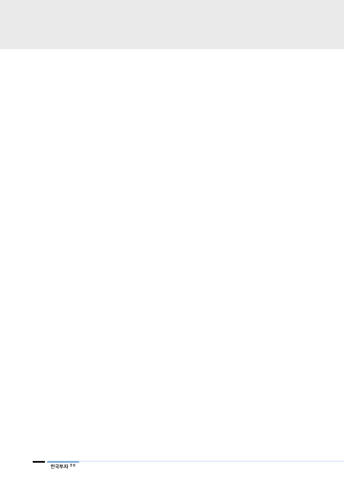

코웨이(021240)
2017년 주력 카테고리에서
신제품 출시
자 이탈이 일부 불가피했다. 또한 만기도래 계정 증가가 있었던 것으로 판단된다.
2011~2012년 36만, 27만 순증을 기록하며 크게 증가한 가입자가 5년 만기 도
래 계정으로 이어졌고, 2016년 얼음 정수기 사태와 맞물려 가입자 이탈을 막기
위한 해지율 관리에 주력했던 것으로 파악된다. 결과적으로 해지율은 2016년
1.21%에서 작년 1.01%로, 분기별로는 4분기에 0.86%로 하락하면서 최근 3년
간 가장 낮은 수준으로 하락했다. 가입자 이탈 우려는 일단락되었다.
금년은 정수기, 청정기, 매트리스를 위주로 신제품 출시가 예상된다. 정수기는 경
쟁사들이 두각을 나타낸 직수 정수기 시장을 공략하기 위한 신제품 출시가 예상
된다. 청정기는 기존 프리미엄 제품 위주에서 보급형 신제품을 출시할 예정이다.
기존 매트리스 외에 ‘모션 베드’, ‘에어 매트리스’ 등 신제품 출시가 예상된다.
상반기 중 ‘의류청정기’가 출시될 예정이다. 5번째 렌탈 카테고리가 될 것이다. 소
비자 반응 및 가입자 확보는 확인 요인이다. 유사한 제품인 LG전자의 ‘트롬스타
일러’는 월 1만 대 이상 판매, 월 렌탈 가격은 4만~5만원 수준이다. 렌탈 가격이
유사하게 책정될 경우 국내 ARPU 24,000원보다 높을 것이다.
기업개요 및 용어해설
■ 기업개요
1989년 창립 이래 정수기, 공기청정기, 비데 등 환경가전 제품을 생산, 판매하는 환경가전 전문기업으로 1998년 렌탈비
지니스 개념을 업계 최초로 도입하고 ‘코디(CODY)’를 통해 사전서비스라는 차별화된 서비스를 제공함에 따라 시장점유
율 (정수기 45%, 공기청정기 44%, 비데 38%, 연수기 62%), 2016년 말 기준 약 570만의 렌탈 및 멤버쉽 회원을 확보
하고 있다. 기존 정수기, 공기청정기, 비데에서 연수기, 음식물처리기, 침대 매트리스 등 제품 Line-up을 지속적으로 확
대해 나가고 있으며 해외사업에도 박차를 가하고 있다.
■ 용어해설
렌탈: 소비자는 등록비만 지불하고 월 일정 렌탈비를 지불하면서 제품 사용 권한을 가짐. 통상 3년 약정으로 5년
이후에 소유권은 소비자에게 이전됨. 렌탈비에는 제품 사용권과 관리 서비스가 함께 제공됨
멤버쉽: 제품을 소유하고 관리 서비스만 받음
ARPU: Average Revenue Per User, 가입자 월 렌탈/멤버쉽 비용
6